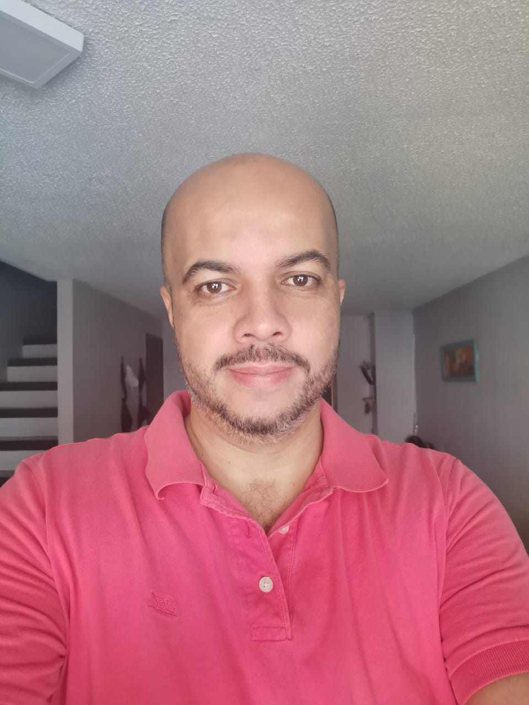
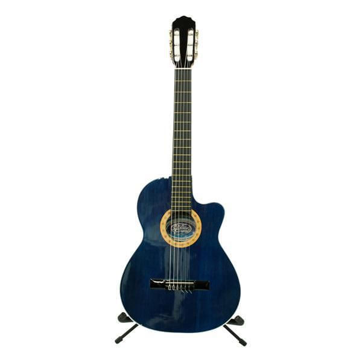

Section 3

Leandro Rodriguez
Tengo 18 años, vivo en Palmira. Soy estudiante de la Universidad del Valle sede Palmira, en dónde estudio Tecnología en Sistemas de Información, actualmente estoy en 4to semestre. Me gusta lo relacionado a la programación y quiero aprender todo lo que pueda de esta área.

Nicolay Rivera
Tengo 45 años, vivo en la ciudad de Pereira. Soy Contador Público y siempre me han gustado la informática. Trabajo con una empresa desarrolladora de software especializada en el sector Público, donde me encargo de realizar las implementaciones.

Alberto Alonso De la Hoz
Tengo 23 años y siento una gran pasión por la informática y a la música. Estudié ingeniería mecánica en la universidad del Atlántico y actualmente estoy en proyecto de grado. Casi siempre voy a estar detrás de mi guitarra o de una computadora.

Emanuel Valenciano
Aprendiz SENA en análisis y desarrollo de sistemasas de información, vivo en la ciiudad de Bogotá me gusta aprender y siempre estare dispuesto a hacerlo, en mi tiempo libre me gusta ver una buena película o salir y tomar el sol, jugar micro también está en laas opciones.